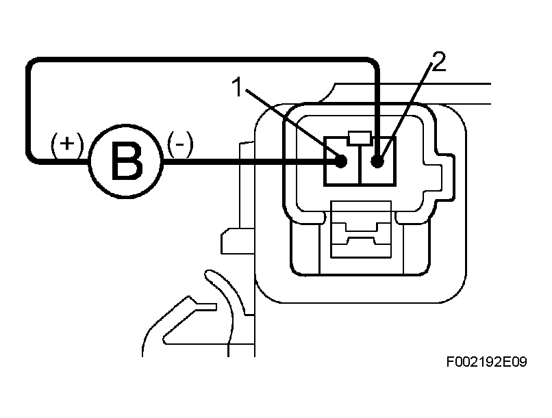
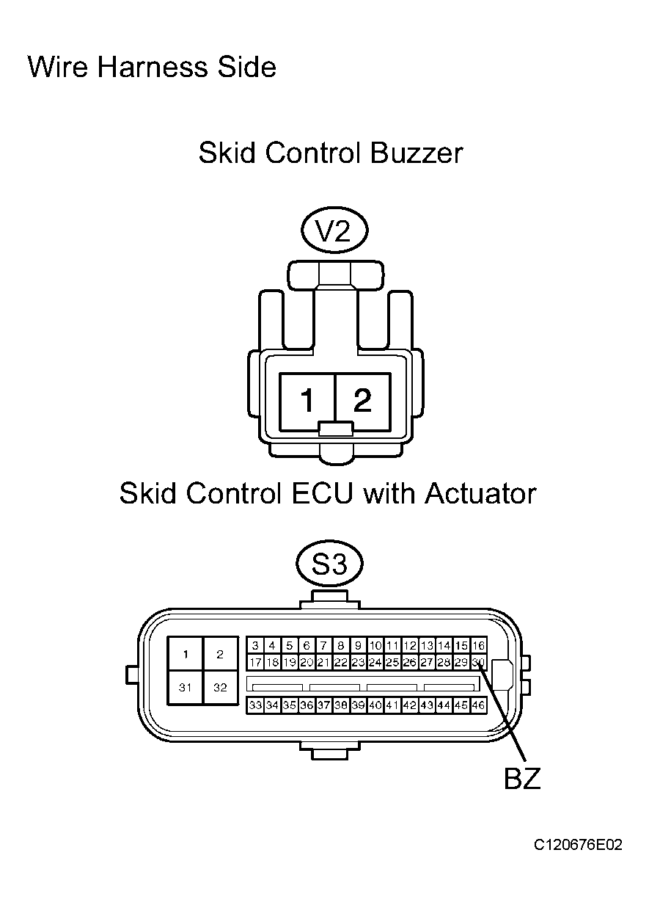

Inspection Procedure
- CHOOSE DIAGNOSIS METHOD
- Choose the diagnosis method.
Method
METHOD REFERENCEMethod Proceed to Using intelligent tester A Not using intelligent tester B
B: Go to step 3
A: Go to next step
- Choose the diagnosis method.
- PERFORM ACTIVE TEST BY INTELLIGENT TESTER (SKID CONTROL BUZZER)
- Select the ACTIVE TEST, generate a control command, and then check that the skid control buzzer sounds.
Skid control ECU with actuator
ITEM VEHICLE CONDITION DIAGNOSTIC CHARTItem Vehicle Condition / Test Details Diagnostic Note VSC / BR WARN BUZ Turns VSC / BRAKE warning buzzer ON / OFF Buzzer can be heard OK: Normal operation.
HINT:
When replacing the skid control ECU with actuator, perform the zero point calibration (see CALIBRATION ).
OK: REPLACE BRAKE ACTUATOR ASEMBLY
NG: Go to Next Step
- Select the ACTIVE TEST, generate a control command, and then check that the skid control buzzer sounds.
- INSPECT SKID CONTROL BUZZER ASSEMBLY
- Disconnect the skid control buzzer connector.
- Apply positive (+) battery voltage to terminals 1 and 2 of the skid control buzzer connector. Check that the buzzer sounds.
OK: Skid control buzzer sound is heard.
NG: REPLACE SKID CONTROL BUZZER ASSEMBLY

Courtesy of © TOYOTA, LICENSE AGREEMENT TMS1002OK: Go to Next Step
- CHECK WIRE HARNESS (SKID CONTROL BUZZER - SKID CONTROL ECU AND BATTERY)
- Disconnect the V2 buzzer connector.
- Disconnect the S3 ECU connector.
- Measure the resistance of the wire harness side connectors.
Standard resistance
TESTER CONNECTION SPECIFIED CONDITIONTester Connection Specified Condition V2-1 - S3-30 (BZ) Below 1 Ω - Measure the voltage of the wire harness side connectors.
Standard voltage
TESTER CONNECTION SPECIFIED CONDITIONTester Connection Specified Condition V2-2 - Body ground 10 to 14 V HINT:
When replacing the skid control ECU with actuator, perform the zero point calibration (see CALIBRATION ).
NG: REPAIR OR REPLACE HARNESS AND CONNECTOR

Courtesy of © TOYOTA, LICENSE AGREEMENT TMS1002OK: REPLACE BRAKE ACTUATOR ASSEMBLY